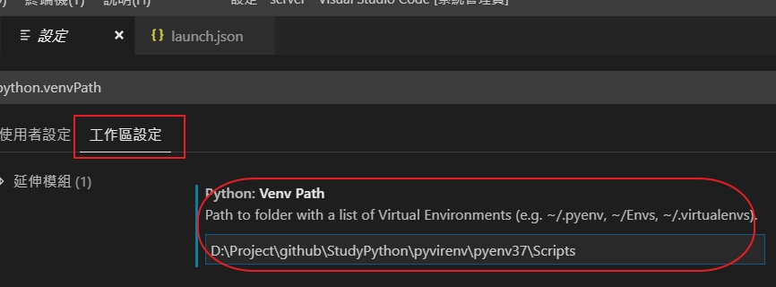

前言
這是為了了解Flask-SocketIO的特性和是否可以使用動態的namespace來建立的測試程式
設定環境
先建立來使用虛擬環境來建立Flask的環境
可以參考之前學習Flask起手式因為我之前有建立好的虛擬環境，所以只要起動它就可以，在下面建立app.py的內容如下
1
2
3
4
5
6
7
8
| from flask import Flask
app = Flask(__name__)
@app.route('/')
def index():
return "hello flask"
if __name__ == "__main__":
app.debug = False
app.run(host='localhost', port=5000)
|
在設定vscode的工作區設定裏將虛擬環境的python執行路徑加入到python:Venv Path如下的圖示

目前的內容如下，這是虛擬環境的python的執行檔
1
| D:\Project\github\StudyPython\pyvirenv\pyenv37\Scripts
|
要設定launch.json的內容如下
1
2
3
4
5
6
7
8
9
10
11
12
13
14
15
16
17
18
19
20
21
22
23
24
25
26
27
| {
"version": "0.2.0",
"configurations": [
{
"name": "Python：Flask",
"type": "python",
"request": "launch",
"module": "flask",
"pythonPath": "D:/Project/github/StudyPython/pyvirenv/pyenv37/Scripts/python.exe",
"env": {
"FLASK_APP": "app.py",
"FLASK_ENV": "development",
"FLASK_DEBUG": "0"
},
"args": [
"run",
"--no-debugger",
"--no-reload"
],
"jinja": true
}
]
}
|
安裝Flask-SocketIO
啟動虛擬環境來安裝
1
2
| pip install flask-socketio
pip install gevent
|
修改app.py如下
1
2
3
4
5
6
7
8
9
10
11
12
13
14
15
16
17
18
19
20
21
22
23
24
25
26
27
28
29
30
31
32
33
34
35
36
37
38
39
40
41
42
43
44
45
46
| from flask import Flask, request
from flask_socketio import SocketIO, send, emit
app = Flask(__name__)
app.config["SECRET_KEY"] = "secret1"
socketio = SocketIO(app)
@app.route('/')
def index():
return "hello Flask-SocketIO"
@socketio.on("connect")
def onconnect():
currentSocketId = request.sid
print(request.namespace)
print("[server]<connect> socket.id=%s" % (currentSocketId))
@socketio.on("connected")
def onConnected(data):
currentSocketId = request.sid
print("[server]<connected> socket.id=%s msg=%s" %
(currentSocketId, data))
@socketio.on("disconnect")
def ondisconnect():
print("[server]<disconnect>")
@socketio.on("chatmessage")
def onchatmessage(data):
msg = "[server]<chatmessage>:%s" % (data)
print("[server]<chatmessage>:%s", msg)
emit("chatmessage", data)
if __name__ == "__main__":
app.debug = False
socketio.run(host='localhost', port=5000)
|
客戶端
設定client端是用Angular可以參考之前的學習typescript和socket-io的使用有關客戶端的設定
建立新的angular的客戶端
建立chat下的room1的頁面
安裝用到的模組
1
| npm install socket.io --save
|
加入連線用到的服務
1
| ng g service chat/services/socket
|
在src\app\chat\services\socket.service.ts如下
1
2
3
4
5
6
7
8
9
10
11
12
13
14
15
16
17
18
19
20
21
22
23
24
25
26
27
28
29
30
31
32
33
34
35
36
37
38
39
40
| import { Injectable } from '@angular/core';
import * as socketIo from "socket.io-client";
import { Event } from "../model/event";
import { Observable } from 'rxjs';
@Injectable({
providedIn: 'root'
})
export class SocketService {
private socket: socketIo;
constructor() { }
public initSocket(ns_url: string) {
this.socket = socketIo(ns_url);
}
public onEvent(event: Event): Observable<any> {
return new Observable<Event>(observer => {
this.socket.on(event, () => observer.next());
});
}
public SendConnect() {
this.socket.emit("connected", "我已連線了");
}
public Sendchatmessage(msg: string): void {
this.socket.emit("chatmessage", msg);
}
public Onchatmessage(): Observable<string> {
return new Observable<string>(observer => {
this.socket.on("chatmessage", (data: string) => {
observer.next(data)
});
});
}
}
|
剩下的可以參考一下github中的TestFlaskSocketIOchat
注意在app.py中的emit使用上要注意
1
2
3
| emit("chatmessage", data)
emit("chatmessage", data, broadcast=True)
emit("chatmessage", data, broadcast=True, include_self=False)
|